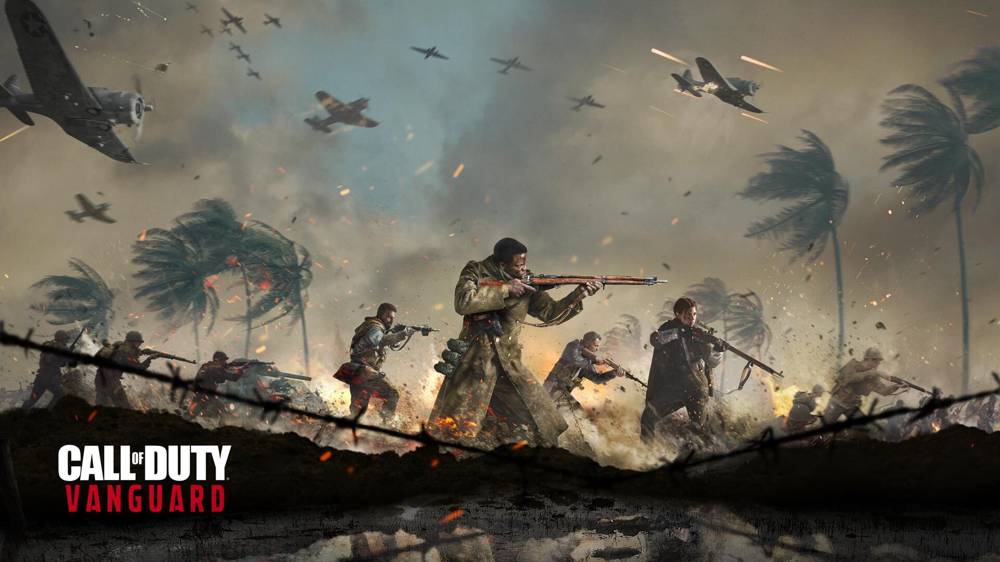

Hermann Freisinger
Born as the only child of a wealthy family with a long history of military service, Freisinger would hold his family's reputation close to him. Though not confirmed, Arthur Kingsley believes that Freisinger is from Neustadt due to his Rhineland accent, and that he saw the French military make occupation during World War I. Kingsley also implies that Freisinger would also see African-American members of the French military meet and marry German women, and also give Hermann orders as well.
Hermann would serve as a courier and information analyst during the Great War, but he would see Germany be defeated by the Allied Powers. During the 1930s, he would be a member of the military police before joining the Gestapo, and was able to rise through the ranks of the Nazi Party due to his charisma. Gaining the rank of general, Freisinger became the head of the Gestapo, and believed in Adolf Hitler's philosophy in exterminating all races that were inferior.
During the course of the Second World War, Freisinger became disillusioned with Hitler due to seeing him as weak, and possibly because he saw that the Third Reich would crumble due to the Soviet Union's push into Germany. Wanting to create a new Reich from the ashes, Freisinger decided to secretly create a project called "Phoenix" to usurp Hitler and become the new Führer. While doing this in the shadows, Freisinger gained support from his fellow co-conspirators Erwin Rommel, Leo Steiner and Hezel, whom he keep in contact with.
In winter of 1943, Hermann would meet with Steiner during the attempted capture of Stalingrad, providing him with a letter due Leo's forces being dwindled by Lady Nightingale. When Steiner continued his pursuit to kill Polina Petrova, Freisinger abandoned the area, and was presumably informed of Leo's death. Despite the loss of Steiner, Rommel and Hezel, Freisinger continued to plan to usurp Hitler while also gaining support from the elitist who believed in his vision of the Fourth Reich.
Near the end of the war, he conspires with a group of Nazis officials to conduct a coup and murder Hitler and his loyalists to initiate Project Phoenix so the remnnats of the Nazis who are loyal to him can go into hiding to build the Fourth Reich in the shadow, thus preserving the Nazis as a whole to bid their time to strike back at the Allied once again. As Task Force Vanguard corners him, he boasts that they or the Allied cannot kill him due to the intel he could provide them but Polina and Kingsley do not buy it and proceed to soak him in gasoline and burn him.
TRIVIA
- Freisinger is inspired by Heinrich Müller,head of the Gestapo between 1939 and 1945.
- Freisinger can be seen wearing a Silver 2nd Class Wound Badge, indicating he was wounded three or four times throughout the war.
- He idly wears the uniform and rank insignia of an Untersturmführer (Second Lieutenant) despite holding the rank of SS-Oberst-Gruppenführer.